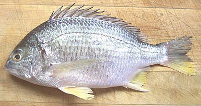

Yellowfin Seabream

[Acanthopagrus latus]
This Indo-West Pacific fish is found from the Persian Gulf to the
Philippines and from the southern tip of Japan down to the north coast
of Australia where it is particularly common. It can grow to 19 inches
and 3 pounds but the photo specimen was 10-1/2 inches and weighed 12
ounces. This fish is not considered threatened. It is caught
wild, but is also heavily farmed.
More on Porgys and Seabream.
The flesh of this fish is medium in color and has a pleasant medium
flavor. I have steamed this fish
(Steamed Fish Chinese Style)
very successfully. The fins and bones are quite manageable even if the
fish is steamed whole.
Buying:
Yellowfin Seabream fairly often appears in the
Asian fish markets here in Los Angeles.
Scales:
This fish is covered with large scales with
medium adherence - not real hard to scrape off but they will fly around
quite a bit.
Cleaning:
This fish is a little more difficult to clean
than some because of tough membranes in the body cavity, and you need to
use long nose pliers to pull the gills because the gill slits are small.
You'll usually find a very large amount of fat stored in the body cavity.
Skin:
The skin shrinks quite a bit when cooked, so it
should be removed from fillets using the standard long knife and cutting
board Method. Care is needed because
the flesh is very tender. The skin does not have a strong flavor, so
can be added to the stock pot with the heads and bones. The skirt is
likely to come mostly loose but it's small and you can just cut it off
and add it to the stock pot. If you steam, bake, broil or grill this
fish, make diagonal cuts through the skin so it doesn't tear itself
up and look ugly.
Fillet:
This is a fairly easy fish to fillet with a
coherent easy to follow bone structure. Cut down to the backbone, then
over the backbone at the tail and forward. When you get to the rib
cage, use kitchen shears to cut the ribs from the backbone, then pull
them from the fillet with long nose pliers.
Yield:
A 10-1/2 inch 12 ounce fish yielded 5 ounces of
skinless fillet (42%).
Stock:
The head, bones, fins and skin make a mild light
colored stock quite usable for making fish soups. For details see our
Making Fish Stock page.
sf_yfbreamz* 060902 - www.clovegarden.com
©Andrew Grygus - agryg@clovegarden.com - Photos on this
page not otherwise credited are © cg1 -
Linking to and non-commercial use of this page permitted